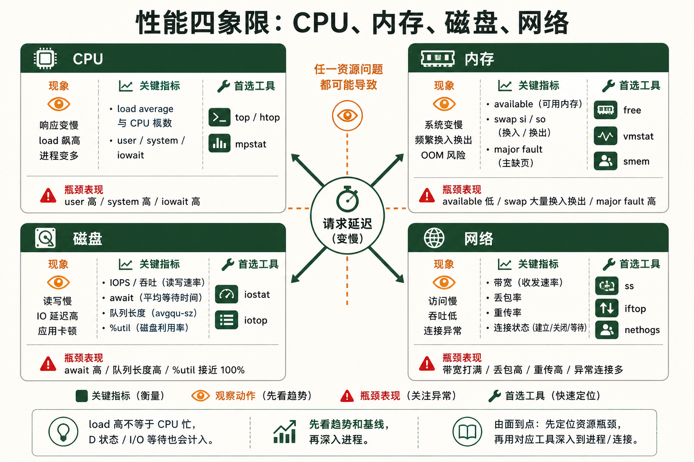
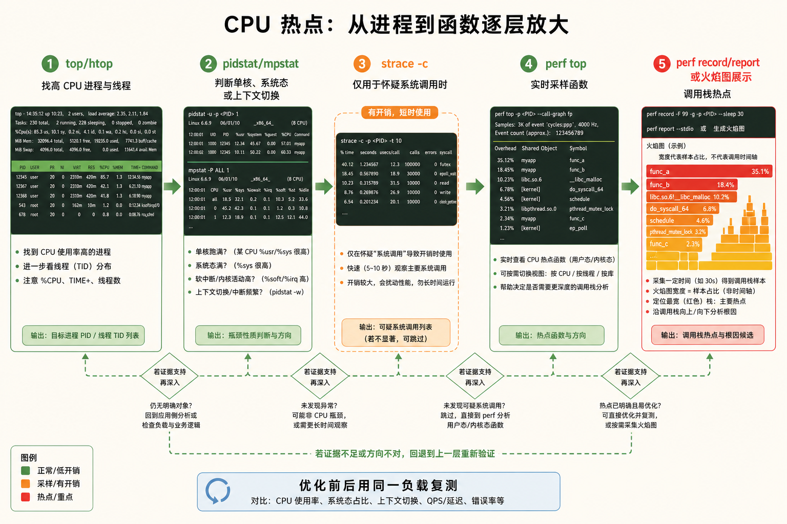
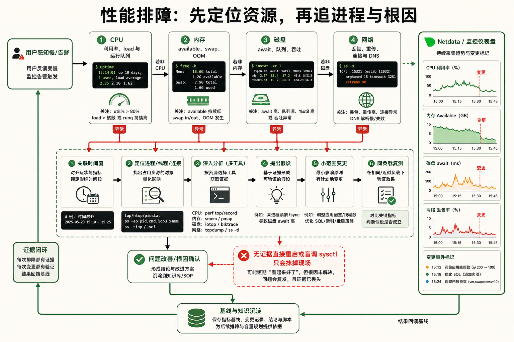
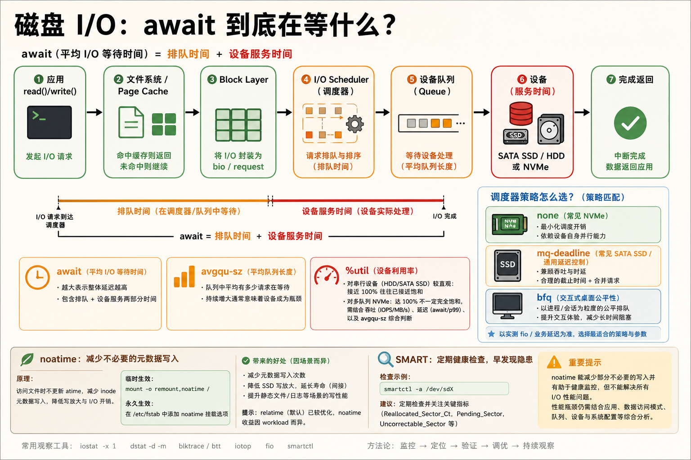

1全栈性能分析工具链
层级一：CPU —— 谁在消耗计算资源
基础top —— 交互式进程监控
top 是 Linux 性能分析的"第一面镜子"。启动后每 3 秒刷新一次，按 1 展开所有 CPU 核心，按 P 按 CPU 使用率排序，按 M 按内存排序。你盯着它看三分钟的 CPU 使用率曲线，就能知道系统是否满载。
关键指标解读：load average（右上角三个数字）——分别表示 1、5、15 分钟的平均负载。如果 1 分钟的值远大于 5 和 15 分钟的值，说明负载正在快速上升；如果三个值都很高，说明系统长期过载。
top
# 进入后按快捷键:
# 1 — 展开/折叠所有 CPU 核心
# P — 按 CPU 使用率降序排列
# M — 按内存使用率降序排列
# c — 显示进程的完整命令行
# k — 杀掉一个进程（输入 PID 和信号）
# q — 退出
# 非交互式快照（脚本中常用）
top -bn1 | head -20▶ top 关键输出解读
top - 14:32:18 up 45 days, 2:15, 3 users, load average: 4.52, 2.10, 1.85
Tasks: 312 total, 2 running, 310 sleeping, 0 stopped, 0 zombie
%Cpu(s): 87.3 us, 5.1 sy, 0.0 ni, 6.8 id, 0.0 wa, 0.0 hi, 0.8 si
# ^^^^^^^ ^^^^^
# 用户态占比87%→某个应用吃满了CPU 空闲仅6.8%→CPU严重不足htop —— 彩色增强版 top
htop 是 top 的现代化替代品：彩色柱状图显示 CPU、内存、Swap 使用情况，鼠标可点击，支持树状视图显示父子进程关系，F3 搜索、F9 杀进程，用户体验远好于 top。
# 安装
apt install htop # Debian/Ubuntu
dnf install htop # RHEL/Fedora
# 启动（彩色界面）
htop
# 常用快捷键:
# F3 — 搜索进程
# F4 — 过滤进程名
# F5 — 树状视图（看父子关系）
# F6 — 选择排序字段
# F9 — 发送信号给进程
# F10 — 退出mpstat —— 每核 CPU 详细统计
mpstat 属于 sysstat 包，能看到每个 CPU 核心的使用率，包括用户态、内核态、IO 等待、软中断等细分。这个工具能回答"是哪个核心在工作，还是全都在工作"。
# 每秒输出一次，共 5 次
mpstat 1 5
# 只看特定核心
mpstat -P 0 1 # 只看 CPU0▶ mpstat 输出解读
Average: CPU %usr %nice %sys %iowait %irq %soft %steal %idle
Average: all 65.2 0.0 8.1 12.3 0.0 1.2 0.0 13.2
# ^^^^ ^^^^^^
# 用户态65% IO等待12.3%→磁盘拖慢了CPU!如果你想让监控变得赏心悦目，
bpytop（Python 版）或 btop（C++ 版）提供炫酷的终端图形界面——CPU 实时折线图、网络吞吐曲线、磁盘 IO 柱状图、进程 CPU 排名，一个终端窗口看清全貌。安装：apt install btop 或 pip install bpytop。层级二：内存 —— 系统还剩多少可用内存
基础free —— 内存概览
free -h 是看内存的第一选择。available 列才是"真正可用的内存"——它包括了可以被回收的缓存和缓冲区。free 列是"完全未被使用的内存"，这个值小不一定是坏事，因为 Linux 会积极利用剩余内存做文件缓存。
free -h
# total used free shared buff/cache available
# Mem: 15Gi 3.2Gi 2.1Gi 1.1Gi 9.7Gi 11Gi
# Swap: 2.0Gi 1.5Gi 0.5Gi
#
# 关键判断:
# available < 总内存的10% → 内存紧张
# Swap used > 0 且持续增长 → 内存不足，系统在用磁盘当内存vmstat —— 虚拟内存统计
vmstat 1 每秒输出一行虚拟内存统计，重点看 si（swap in）和 so（swap out）是否持续较高，并结合可用内存、应用延迟和磁盘活动判断。少量换入换出并不必然表示内存严重不足；第一行通常是自启动以来的平均值，不宜当作本秒瞬时采样。
vmstat 1 10
# procs -----------memory---------- ---swap-- -----io---- --system-- ----cpu----
# r b swpd free buff cache si so bi bo in cs us sy id wa
# 2 0 512M 2.1G 1.2G 8.5G 0 0 12 45 500 1200 15 5 75 5
# ^^ ^^
# si持续>0 → 严重内存不足!smem —— 更准确的内存统计
传统工具用 RSS（驻留集大小）衡量进程内存，但 RSS 包含了共享库——两个进程使用同一个 libc.so，RSS 会重复计算。smem 给出 PSS（比例共享集）——共享内存按进程数均分，真正反映每个进程的"公平内存占用"。
apt install smem
# 按 PSS 排序显示进程内存
smem -rs pss
# 饼图显示内存分布（需要 --bar 样式）
smem --pie=name层级三：磁盘 IO —— 存储是不是拖后腿了
进阶iostat —— IO 统计的瑞士军刀
iostat -x 1 显示设备扩展统计。%util 表示采样窗口内设备有 I/O 活动的时间占比，可作为线索；在并行 SSD、NVMe 和虚拟化存储上，接近 100% 也不能单独证明设备已饱和。应同时看吞吐、延迟、队列和应用响应。
await 是该采样段内 I/O 请求的平均完成时间，aqu-sz（旧版常显示 avgqu-sz）是平均在途请求数。合理范围随随机/顺序 I/O、硬盘类型和队列并行度而变，没有通用的 20 ms 或队列深度 1 的故障线；与业务基线对比，并区分读写指标才有意义。
# -x 扩展统计，1 每秒采样
iostat -x 1
# 只看某个磁盘
iostat -x sda 1
# 人类可读单位
iostat -xh 1▶ iostat 关键指标解读
Device r/s w/s rkB/s wkB/s await r_await w_await %util
sda 45.0 120.0 1800 9600 18.5 8.2 22.3 98.5
# ^^^^ ^^^^
# 平均等待18ms 磁盘98.5%时间在忙→瓶颈!iotop —— 哪个进程在大量读写磁盘
就像 top 看 CPU，iotop 看磁盘。它能实时显示每个进程的读写速率。当你发现磁盘 IO 飙升但不知道谁造成的，iotop 就是答案。
apt install iotop
# 只显示正在读写磁盘的进程
iotop -o
# 批处理模式（非交互，适合脚本）
iotop -bon 1层级四：网络 —— 流量从哪来到哪去
进阶iftop —— 实时网络带宽监控
类似 top 的界面，但显示的是实时网络流量——每个连接的源/目标 IP 和端口、2秒/10秒/40秒的流量带宽。一眼就能看出谁在占用带宽。
apt install iftop
# 监控 eth0 网卡
iftop -i eth0
# 显示端口号（而非服务名）
iftop -i eth0 -P
# 快捷键: t 切换显示样式, p 暂停, q 退出nethogs —— 按进程查看网络流量
iftop 按 IP 分组，nethogs 按进程分组。当你看到流量飙升但不知道是哪个程序在跑，nethogs 直接告诉你进程名和 PID。
apt install nethogs
# 监控 eth0，实时按进程显示
nethogs eth0
# 输出示例:
# PID USER PROGRAM DEV SENT RECEIVED
# 1234 www nginx eth0 5.2MB 120.3KB/sec
# 5678 root sshd eth0 0.8KB 0.5KB/secss —— 替换 netstat 的现代工具
ss 比 netstat 更快（直接从内核读取 socket 信息），是查看当前网络连接的首选。
ss -tlnp # 所有监听的 TCP 端口 + 进程名
ss -antp # 所有 TCP 连接（含状态）+ 进程
ss -s # 汇总统计
ss -t state established # 只看已建立的连接
2CPU 分析与 perf —— 函数级热点采样
场景：某个进程 CPU 使用率 100%，但不知道它在干什么
高级第一步：用 top 找到高 CPU 进程的 PID
top -c
# 按 P 排序，看到:
# PID USER %CPU COMMAND
# 1234 app 99.2 /usr/bin/myapp --config /etc/app.conf
# → 目标是 PID 1234第二步：strace —— 追踪系统调用
strace 附着到进程上，打印该进程发出的每一个系统调用。如果 CPU 高是因为程序在做无意义的循环（如重复 read() 失败、poll() 空转），strace 能直接暴露。
# 附着到运行中的进程
strace -p 1234
# 统计系统调用次数和耗时（这才是真正的分析）
strace -c -p 1234
# 运行 30 秒后 Ctrl+C，显示:
# % time seconds calls syscall
# 85.23 45.200 5000000 read ← 85% 时间花在 read()!
# 10.12 5.370 1000000 write
# 3.15 1.670 500000 openat ← openat 被调用了 50 万次?!
# 只追踪特定的系统调用
strace -e trace=read,write -p 1234▶ strace -c 输出解读
strace -c -p 1234
^Cstrace: Process 1234 detached
% time seconds usecs/call calls errors syscall
------ ----------- ----------- --------- --------- ----------------
89.45 12.345678 1234 10000 read
6.23 0.860234 860 1000 write
4.32 0.596432 59 10000 poll
------ ----------- ----------- --------- --------- ----------------
100.00 13.802344 21000 total
# 结论: read() 消耗了 89% 的时间 → 去查读的文件或 socket</code>strace 会显著拖慢目标进程——每个系统调用都要经过 ptrace 拦截。在生产环境的繁忙进程上不要长时间使用 strace -p。先用 -c 统计模式跑 10 秒，拿到系统调用分布就够了。第三步：perf top —— 函数级别的实时热点
strace 告诉你"进程发起了什么系统调用"，perf top 告诉你"CPU 时间花在了哪些函数上"——深入到代码行级别甚至汇编指令级别。perf 利用内核的硬件性能计数器（PMU）进行采样，开销远小于 strace。
# 系统级实时采样（看所有进程的函数热点）
perf top
# 只看特定进程
perf top -p 1234
# 输出示例:
# Samples: 450K of event 'cycles', Event count: 123456789012
# Overhead Shared Object Symbol
# 42.15% libcrypto.so.3 [.] sha256_block_data_order ← 42% CPU 在计算 SHA256!
# 18.32% myapp [.] process_request
# 10.56% [kernel] [k] copy_user_enhanced_fast_string
# 7.21% libc.so.6 [.] __memcpy_avx_unalignedperf record + perf report —— 离线采样分析
perf top 是实时看，perf record 是录下来再分析。录制 30 秒的采样数据，然后用 perf report 交互式浏览。
# 录制某个进程 30 秒
perf record -p 1234 -g -- sleep 30
# 交互式查看报告
perf report
# 火焰图风格（需要 FlameGraph 脚本）
perf script | stackcollapse-perf.pl | flamegraph.pl > flame.svg
# 火焰图: 横轴=函数占比，纵轴=调用栈深度
# 宽的函数条=CPU 时间最多的函数解码 /proc/stat —— 内核级 CPU 计数
cat /proc/stat | head -5
# cpu 用户态时间 user 低优先级 nice 内核态 system idle iowait irq softirq steal
# cpu 1234567 12345 67890 234567 1234567890 45678 0 1234 0
# ^^^^^^ ^^^^^^^^^
# 用户态 cpu 时间 空闲时间
# 计算 CPU 使用率
# 从 /proc/stat 读数后，过 1 秒再读，差值即 1 秒内 CPU 在各状态的时间
# CPU 使用率 = 100 - (idle差值 / 总差值 * 100)
3内存分析与 OOM Killer 调优
场景：应用莫名其妙被杀了，日志里什么都没有
高级OOM Killer 是什么
当系统内存（RAM + Swap）全部耗尽，内核无法分配新的内存页时，OOM Killer（Out-Of-Memory Killer）会被唤醒。它根据一套评分规则选择一个进程杀掉，释放其内存，让系统继续运行。这就像沉船时扔掉最不重要的货物——但有时它会扔掉你最重要那个。
查 OOM 日志 —— 确认 OOM Killer 是否触发过
# 查看内核日志中的 OOM 记录
dmesg | grep -i "killed process"
# 或者（systemd 系统）
journalctl -k | grep -i oom
# 查看系统日志
grep -i "out of memory" /var/log/syslog
grep -i "killed process" /var/log/syslog
# 典型 OOM 日志片段:
# Out of memory: Killed process 12345 (java) total-vm:8589934592kB,
# anon-rss:4194304kB, file-rss:0kB, shmem-rss:0kB, UID:1000
# ^^^^^^^^ ^^^^^^^^^^
# 程序名 实际使用物理内存 4GBOOM Score 机制
每个进程都有一个 oom_score（分值越高，越优先被杀）和一个 oom_score_adj（管理员可调的偏移量）。最终评分 = 内核计算的基础分 + oom_score_adj。
# 查看某个进程的 OOM 评分
cat /proc/1234/oom_score # 当前评分
cat /proc/1234/oom_score_adj # 手动调整的偏移
# 查看系统的 OOM 阈值
cat /proc/sys/vm/overcommit_memory # 0/1/2
cat /proc/sys/vm/overcommit_ratio # overcommit_memory=2 时的百分比
# 保护重要进程不被 OOM Killer 杀掉（设置低分值）
echo -1000 > /proc/1234/oom_score_adj # 完全免疫
echo -500 > /proc/1234/oom_score_adj # 降低被杀优先级
# 标记进程"优先被杀"（测试用）
echo 1000 > /proc/1234/oom_score_adj # 最容易被杀范围是 -1000（完全免疫 OOM Killer）到 1000（必定被杀）。-1000 用于 SSHD、systemd 等守护进程，确保系统核心服务不会因 OOM 而挂掉。生产环境中数据库、消息队列等关键服务建议设为 -500 到 -800。
手动触发 OOM —— 测试 OOM Killer 行为
# 开启系统请求触发功能
echo 1 > /proc/sys/kernel/sysrq
# 手动触发 OOM Killer（模拟内存耗尽）
echo f > /proc/sysrq-trigger
# 内核会在 dmesg 中打印 killer 选择过程和结果找出内存消耗大户的具体文件
# /proc/pid/smaps 显示进程的详细内存映射
cat /proc/1234/smaps | grep -E "^(Rss|Pss|Swap):"
# 进程的内存各部分分别来自哪些文件
pmap -x 1234
# 谁在用最多的物理内存
ps aux --sort=-%mem | head -11
4磁盘 IO 优化 —— 让磁盘不再拖后腿
场景：数据库写入慢，发现磁盘 IO 等待高达 40%
进阶noatime 挂载 —— 零成本的性能提升
现代 Linux 通常使用 relatime，不会在每次读取后都写入 atime。noatime 可进一步减少部分元数据更新，但会改变依赖访问时间的程序行为；先测量实际写入与应用需求，再决定是否调整挂载选项，不能把它当作零成本的通用优化。
# 查看当前挂载选项
mount | grep "^/dev"
# /dev/sda1 on / type ext4 (rw,relatime,errors=remount-ro)
# ^^^^^^^^ relatime 是折中方案（仅在 atime < mtime 时更新）
# 临时改为 noatime
mount -o remount,noatime /
# 永久修改（/etc/fstab）
# 修改前:
# UUID=xxx / ext4 defaults 0 1
# 修改后:
# UUID=xxx / ext4 defaults,noatime 0 1I/O Scheduler —— 磁盘调度策略选择
I/O Scheduler 决定了多个 IO 请求的排队和执行顺序。不同的调度器适用于不同硬件：
- none (multiqueue)：适合 NVMe SSD。硬件自己处理排队，内核不应干预
- mq-deadline：适合 SATA SSD。保证读写请求的延迟上限，简单高效
- bfq：适合桌面系统或 HDD。按进程分配带宽，保证交互式应用的响应速度
- kyber：适合低延迟场景。根据完成时间动态调整队列深度
# 查看当前调度器
cat /sys/block/sda/queue/scheduler
# [mq-deadline] none
# ↑当前生效 ↑可选
# 临时切换
echo none > /sys/block/nvme0n1/queue/scheduler
# 永久设置（通过内核启动参数）
# 编辑 /etc/default/grub
# GRUB_CMDLINE_LINUX="elevator=none"
# update-grubXFS 文件系统 + 读写优化组合
数据库存储选型应先遵循数据库与发行版支持矩阵，再对真实读写模型测试 ext4、XFS 等候选方案。提高队列深度可能提升吞吐，也可能拉高尾延迟；挂载选项同样需要验证。记录基线、一次只改一个变量，再以事务吞吐与 P95/P99 延迟判断效果。
# 格式化为 XFS
mkfs.xfs -f /dev/sdb1
# 挂载时的优化选项
mount -o noatime,nodiratime,logbsize=256k,logbufs=8,inode64 /dev/sdb1 /data
# fstab 永久挂载:
# /dev/sdb1 /data xfs defaults,noatime,nodiratime,inode64 0 2
# 增加磁盘队列深度（提高并发处理能力）
cat /sys/block/sda/queue/nr_requests # 查看当前值（通常 128）
echo 1024 > /sys/block/sda/queue/nr_requests # 增大到 1024文件系统基准测试
# fio —— 灵活的 IO 基准测试
fio --name=test --rw=randread --bs=4k --size=1G \
--numjobs=4 --runtime=60 --time_based \
--ioengine=libaio --direct=1 --filename=/data/testfile
# 输出:
# read: IOPS=125k, BW=489MiB/s (513MB/s)
# lat (usec): min=15, max=1500, avg=32.45
# ^^^^ ^^^^^
# 125K 随机读 IOPS 平均延迟 32 微秒检查磁盘健康状态 —— SMART
apt install smartmontools
# 查看磁盘 SMART 信息
smartctl -a /dev/sda
# 重点看:
# Reallocated_Sector_Ct → 重映射扇区数（>0 就要警惕）
# Current_Pending_Sector → 待处理坏扇区（>0 说明有读写失败）
# Power_On_Hours → 磁盘已运行时间
# Wear_Leveling_Count → SSD 磨损计数（越低越好）
# 短期自检
smartctl -t short /dev/sda
smartctl -l selftest /dev/sda # 查看自检结果5netdata 实时监控仪表盘
场景：需要一个开箱即用的监控面板，不想配 Prometheus + Grafana
进阶netdata 是什么
netdata 是一款轻量级实时监控工具，安装后自动发现 CPU、内存、磁盘、网络、进程、Nginx、MySQL 等 200+ 数据源，在 http://localhost:19999 提供 Web 仪表盘。它开箱即用、零配置、实时更新（每秒刷新）、资源占用极低（~1% CPU，几十 MB 内存）。
netdata 的核心价值：让系统管理员 30 秒内 拥有一个全功能监控仪表盘，而不需要部署 Prometheus、Grafana、Node Exporter 等一整套组件。
一键安装
# 官方一键安装脚本
wget -O /tmp/netdata-kickstart.sh https://get.netdata.cloud/kickstart.sh
sh /tmp/netdata-kickstart.sh --no-updates --stable-channel
# 安装完成后:
# Web 仪表盘: http://服务器IP:19999
# 后台服务: systemctl status netdata
# 或者用包管理器（版本可能较旧）
apt install netdata # Debian/Ubuntu
dnf install netdata # Fedoranetdata 的核心视图
- 系统概览：CPU 利用率、负载、磁盘 IO、网络流量 —— 一张总览图看清全局
- CPU 详情：每个核心的使用率曲线、中断分布、软中断、上下文切换率
- 内存详情：RAM + Swap 使用趋势、内核内存类型（Slab/KernelStack/PageTables）拆分
- 磁盘详情：每个磁盘的 IOPS、吞吐量、延迟、积压（backlog）—— 一眼定位慢盘
- 网络详情：每个网卡的流量、丢包率、错误计数 —— 发现网卡故障
- 进程监控：按应用的 CPU / 内存 / IO / 网络分组统计
- Nginx / MySQL / Redis 等：自动发现，提供服务专属仪表盘（如 MySQL 的 QPS、慢查询、连接数）

配置告警
# netdata 自带 200 多个预设告警规则
# 配置文件在 /etc/netdata/health.d/
# 查看当前告警状态
curl http://localhost:19999/api/v1/alarms
# 自定义告警（如磁盘使用超过 90%）
# 编辑 /etc/netdata/health.d/disk.conf
# alarm: disk_space_90
# on: disk_space._used_percent
# calc: $used
# units: %
# every: 1m
# warn: $this > 80
# crit: $this > 90netdata 适合单机或少量服务器的快速监控，部署成本几乎为零。Prometheus + Grafana 适合大规模集群、需要长期存储和复杂查询的场景。两者可以互补：netdata 提供实时视图，Prometheus 从 netdata 拉取指标做长期存储和聚合。
6性能排查思路速查 —— 找瓶颈的四步法
场景：用户反馈"网站好慢"，你怎么排查？
实战四步排查法（USE 方法的实战版）
CPU、内存、磁盘、网络是常见的四类资源入口，但“网站慢”也可能来自锁争用、数据库查询、外部依赖或应用逻辑。先明确慢请求的时间段和 P95/P99 延迟，再按症状选择观察层次；下面的四步清单用于快速排查，不是必须逐项执行的固定顺序。
第一步：看 CPU
命令：top、htop、mpstat 1
查什么：load average 是否 > CPU 核心数？%idle 是否 < 10%？哪个进程 %CPU 最高？
常见根因：应用程序死循环、正则回溯、JSON 大解析、无限递归
工具链：top 找到 PID → strace -c -p PID 看系统调用 → perf top -p PID 看函数热点
第二步：看内存
命令：free -h、vmstat 1、ps aux --sort=-%mem
查什么：available 是否 < 10%？si/so 是否 > 0？是否触发了 OOM Killer？
常见根因：内存泄漏、缓存未释放、Java 堆设置过大、管道阻塞
工具链：free -h 看全局 → vmstat 1 看交换 → smem -rs pss 找进程
第三步：看磁盘 IO
命令：iostat -x 1、iotop
查什么：%util 是否 > 90%？await 是否 > 20ms？avgqu-sz 是否 > 1？
常见根因：大量日志写入、swap 频繁、数据库全表扫描、备份任务
工具链：iostat -x 看磁盘 → iotop -o 找进程 → 优化挂载选项、调度器

第四步：看网络
命令：iftop、nethogs、ss -s、ping -c 50
查什么：带宽是否打满？连接数是否异常？丢包率是否 > 1%？延迟是否飙升？
常见根因：DDoS 攻击、上游 API 的超时重试风暴、慢客户端占用连接池
工具链：iftop 看流量 → nethogs 找程序 → mtr 追踪路由丢包
性能排查黄金命令组合
# 一次性运行所有关键指标检查（复制粘贴到终端即可）
echo "=== CPU ===" && top -bn1 | head -5 && echo
echo "=== 内存 ===" && free -h && echo
echo "=== 磁盘 IO ===" && iostat -x 1 2 | tail -n +4 && echo
echo "=== 网络 ===" && ss -s && echo
echo "=== 进程 TOP5 ===" && ps aux --sort=-%cpu | head -6 && echo
echo "=== OOM 事件 ===" && dmesg | grep -i oom | tail -3 && echo
echo "=== 磁盘使用 ===" && df -h | grep -v tmpfsCPU 上下文切换 —— 容易被忽略的瓶颈
高 CPU 可能包含调度开销，但每秒上下文切换次数没有适用于所有机器的固定警戒线。将 vmstat 的 cs 与 CPU 核数、线程数及平时基线对比，再用性能采样确认时间是否确实花在调度路径上。
vmstat 1 5
# 关注 cs (context switches) 列:
# procs -----------memory---------- ---swap-- -----io---- -system-- ----cpu----
# r b swpd free buff cache si so bi bo in cs us sy id wa
# 3 0 0 1024M 256M 4096M 0 0 12 32 800 15000 15 5 75 5
# ^^^^^^
# 15000次上下文切换/秒 → 偏高!排查性能问题时最常见的错误是：用 A 命令看了一下，拿不准，又用 B 命令看了一下，还是拿不准——然后重启系统了事。正确的做法是：每一个异常指标都要追问为什么。IO 高 → 是哪个程序在读写 → 在读写什么文件 → 为什么读那么多 → 能不能缓存？CPU 高 → 是哪种 CPU（用户态/内核态/IO等待）→ 哪个进程 → 哪个函数 → 能不能优化？一路追问到代码层面，才叫"排障"。
注解
MQ · Message Queue 消息队列